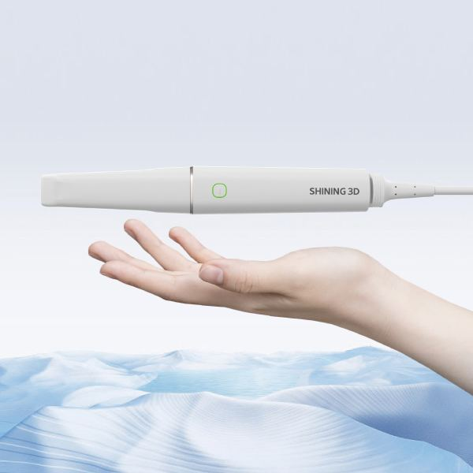
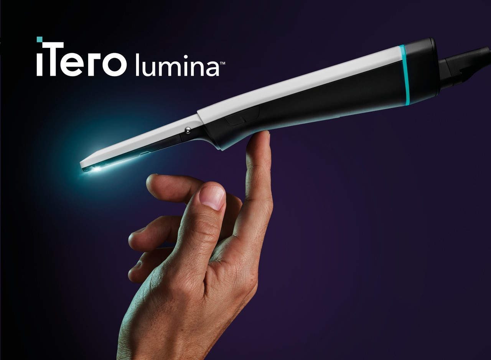
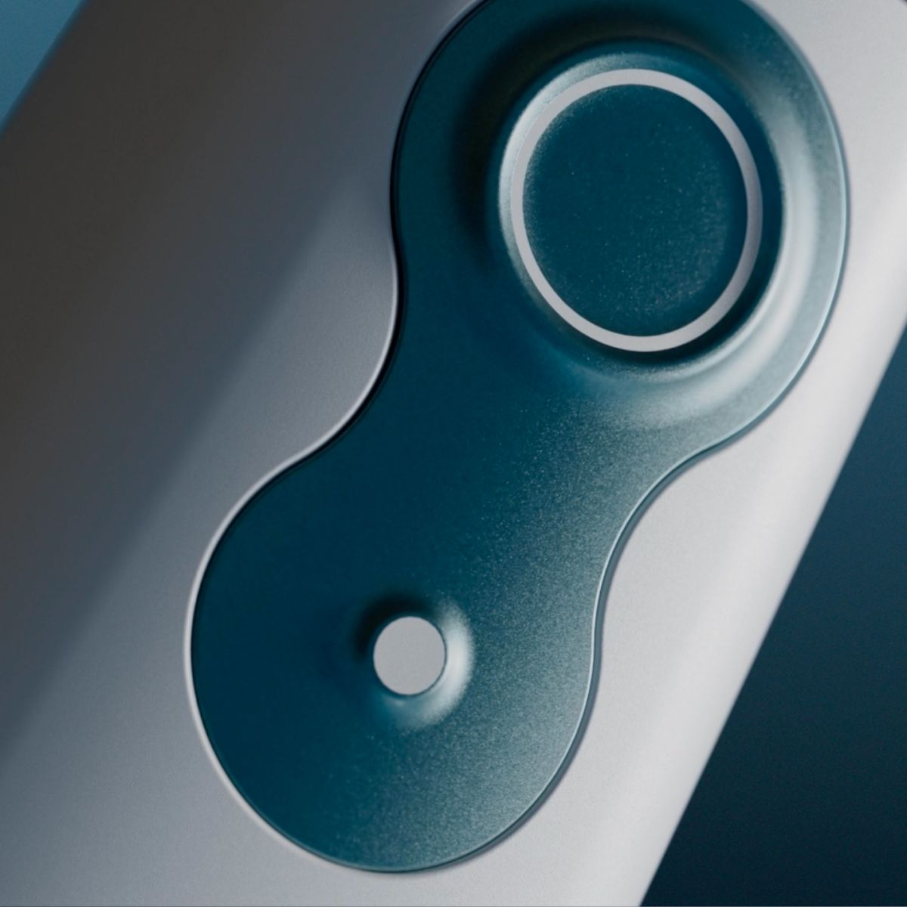
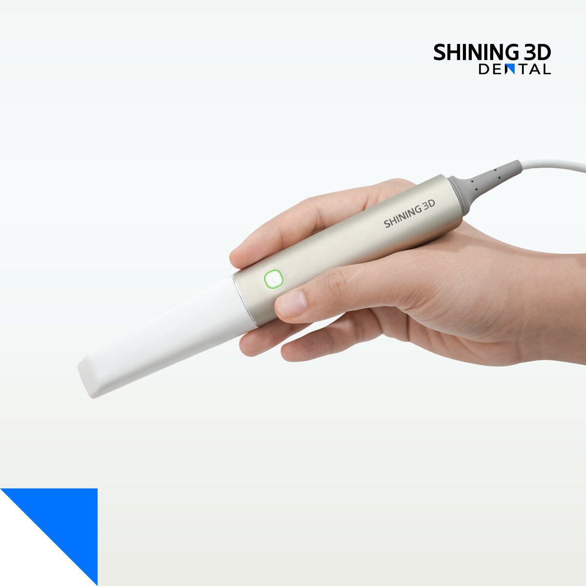
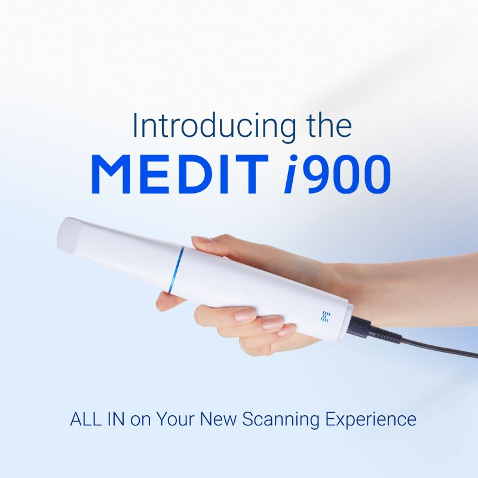
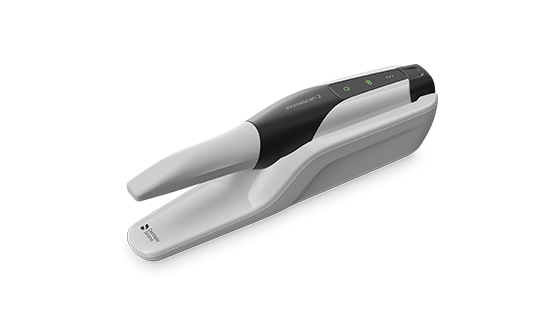

首選觀察｜一般贋復與常規植牙
SHINING 3D Aoralscan Elf
45 萬元／台灣洽談價
最合理的先行候選。 使用與 Elite 同世代的常規 IOS 取像核心、重量僅 106 g、可輸出開放檔案，沒有為使用頻率可能很低的 IPG 支付溢價。獨立實測 ↗
iTero 六鏡頭、SHINING 3D 的 IPG、Medit 的開放軟體、TRIOS 的診斷平台：它們各自解決不同問題。用可查證的原廠資料、獨立評測、全球使用者經驗與台灣限制，做一份真正能用來採購的比較。

SHINING 3D ELF
iTero LUMINA
3Shape TRIOS 6如果診所並沒有固定承接大量 All-on-X，單憑「一日植牙」展示就升級到旗艦 IPG，投資邏輯還不夠完整。
最合理的先行候選。 使用與 Elite 同世代的常規 IOS 取像核心、重量僅 106 g、可輸出開放檔案，沒有為使用頻率可能很低的 IPG 支付溢價。獨立實測 ↗
有明確的取像與 Invisalign 原生工作流程優勢；不是「六倍精準」。要把服務方案與修復用資料路徑一併估價。
核心差異是 MUA Coded Scanbody 的植體相對位置擷取，而非一般單顆牙冠掃得更漂亮。
關注 Margin、Bite、金屬與全口拼接；優先評估低維護的通用 IOS。
Elf / Medit i900看 ClinCheck、Outcome Simulator 與原生提交流程，不只看掃描速度。
iTero Lumina植體位置精度、MUA 相容與技工所流程，比一般掃描畫面更關鍵。
Elite IPG設計、製作、材質、燒結、維護需整套看，不是購買口掃就能當日交牙。
TRIOS / Primescan 2 / SHINING 流程點選上方需求篩選，再展開每張卡片的強項、限制及國際評測。相近價格不代表相同功能，台灣未取得公開報價者直接標示。
日常數位印模已夠強。獨立評測稱其常規 IOS 表現幾乎與 Elite 相同；對一般診所而言，最大的差異不是掃描品質，而是沒有 IPG。
一般掃描、ConsulOS、AccuDesign 等多種軟體與基本 Dental Cloud 可用；核心雲端無月費，但 AI Design / Classic Design 使用 Credits 或服務費，不代表全生態系免費。
原廠雲端政策 →
對多植體全口贋復真正有價值：一次取得植體相對位置，再與軟組織掃描整合；省的是流程與專用量測設備，不是所有病例都需要。
2026《Journal of Dentistry》六植體無牙顎模型體外比較顯示，Elite IPG 與 iTero Lumina 的 Trueness 都相當高；不能直接推論兩者在真實臨床 All-on-X 被動密合相同。即刻負載還需植體穩定度、修復設計、導板、列印或切削設備。
原始論文 →六鏡頭提升視野與多角度擷取，對操作容錯與可視化有實際意義；但差異化價值更大部分來自 Align / Invisalign 工作流程。
亞太原廠說明：首次保固期後通常需另有 Service Plan，維護、軟體更新與雲端備份可能依方案決定；公開資料無法證明台灣統一月費。Invisalign 的原生整合明顯優於多數其他品牌，但第三方掃描器可否提交須以 Align 2026 核可清單為準。
iTero 亞太服務計畫 →
優勢在成熟的軟體應用、技工所資料流與開放格式。應納入正式採購比較，不能只讓 iTero 和 SHINING 3D 兩家互相報價。
原廠說明：Medit 掃描機持有者的 Essential Apps Bundle 仍免費；但台灣 2026/7 起 ClinicCAD 依原廠公告收費，持有者 US$29.99/月或 US$3/牙的按次方案。Medit Cloud 儲存容量另有會員層級，並非所有軟體永遠無費用。
Medit 官方收費表 →強項是成熟贋復工作流程與軟體生態，並延伸到影像輔助診斷；不能把海外 Dx Plus 宣傳功能直接當成台灣已核准使用。
原廠第一年通常含 TRIOS Care，後續可以保留付費 Care 或轉至基本 TRIOS Only；但保固、替機、支援及新功能有差異。Dx Plus 屬額外訂閱。不能簡化成「一定要終身年費」。
3Shape 官方 FAQ →
對已投入 CEREC 製作設備的診所更有協同價值；若沒有切削、燒結與相應工作流程，單台掃描器不足以建立當日修復。
購買決策應以「Scanner + DS Core + CAD + Milling + Furnace + Consumables」的工作流程為單位比較，不適合拿單支掃描槍價格直接與 Elf 做 CP 值對比。
臨床使用者討論 →技術宣傳容易把「取像能力」、「植體坐標」與「當天完成修復」混成一個故事。拆開後，才能知道每多花一筆錢買到什麼。
多角度同步取像，改善視野、較難掃描區域與操作流暢度。它仍是 IOS 的取像架構，不能把六鏡頭解釋為六倍速度或六倍精度。
利用帶編碼的 Scanbody 取得多植體相對位置，再與軟組織的 IOS 資料整合。價值集中在全口植體重建定位。
需要規劃、手術、可控植體穩定度、咬合設計、CAD、列印／切削、材料後處理及技工所配合。
延伸：2026 年六植體無牙顎體外比較 顯示 EPG、Elite IPG、Lumina 在該測試條件下均有高 Trueness；並非臨床上「誰百分之百勝出」的證據。
比硬體規格更重要的是：資料能否自由交給技工所、功能會不會被服務方案鎖住，以及台灣是否能使用海外廣告中的功能。
| 系統 | 常規掃描與 Lab | 最大生態優勢 | 最容易忽略的限制 |
|---|---|---|---|
| ElfSHINING 3D | 開放 STL / PLY / OBJ | 完整常規 IOS + Dental Cloud + 部分設計 App | 無 IPG；部分設計服務需 Credits；定期校正 |
| EliteSHINING 3D | 開放格式 + IPG | 全口 MUA 植體相對位置、整合 SHINING 生態 | MUA 相容與 Coded Scanbody 套件；不是買了就完成 All-on-X |
| LuminaiTero | 可透過 iTero 資料路徑與 Lab 合作細節依模組／合約 | Invisalign / ClinCheck / Outcome Simulator | 服務計畫；原生生態依賴；Lumina Pro NIRI 台灣未核准 |
| i900Medit | 開放 STL / PLY / OBJ | Medit Link + 大量應用程式 + Lab 協作 | ClinicCAD 台灣收費；iPad 限 Mobility 系列 |
| TRIOS 63Shape | 開放格式 + Unite | 高階贋復與 Dx Plus 輔助診斷 | Dx Plus 額外訂閱與台灣適用性；Care / Only 服務差異 |
| Primescan 2Dentsply Sirona | STL / PLY，DS Core 流程 | 與 CEREC 切削生態整合 | DS Core 有付費訂閱要求；雲端依賴 |
Invisalign 不是只有 iTero 能輸入：Align 2026/7 的官方第三方核可名單列出 3M True Definition 與指定的 TRIOS 2／3（台灣適用，但不包含 TRIOS 5/6）。不能把「TRIOS 品牌」直接視為「所有新款 TRIOS 都核可」。官方清單 ↗
以下綜合獨立評測與 Reddit 臨床使用者討論。論壇是自選樣本，正負評都不能直接當成故障率或市場占有率；有矛盾之處保留兩種觀點。
這些是採購決策真正應該納入的本地可查資訊，不必等到現場向廠商逐一詢問才知道。
原廠繁體中文頁面截至查詢時標註 iTero Lumina Pro 影像系統在台灣尚未核准上市。比較六鏡頭的一般 Lumina 時，不能把 Pro 近紅外線診斷功能一起算入。
台灣原廠註腳 ↗台灣產品資訊指出 Dx Plus 上線與使用範圍依主管機關及本地公告。Dx Plus 另外是訂閱功能；不能把 AI Caries Detection 直接當成交機保證。
台灣產品說明 ↗原廠列出台灣在 2026/7/9 的 ClinicCAD 收費政策：擁有 Medit Scanner 者 US$29.99/月或 US$3/牙。但 Essential Apps Bundle 對機主持有人仍免費。
官方政策與細項 ↗貝殼生技提供 Elf／Elite 台灣產品資訊；SHINING 3D 官方確認 Dental Cloud 核心平台無月費，但 AI Design 與設計委託採 Credits 或其他計費方式。不是所有 AI 設計功能都永久免費。
原廠 Credits 說明 ↗下方只把這次取得的三項台灣洽談價可視化。i900、TRIOS 6、Primescan 2 沒有相同規格的台灣正式報價，因此不畫假數字，也不硬排價格。
金額：萬元。此為當次洽談資訊，並非全台公告售價或最終成交價。
最重要的不是把設備分為「45 萬便宜」與「80 萬貴」，而是確認多花 25–35 萬是否能換來實際使用頻率、可計價的臨床服務或節省重工。
拖動高階機實際報價，量化「多花的設備本金」，不含不同品牌的維護或授權費。
不是 TCO 預測。 真正的五年成本還需加上耗材、維修、授權、替機、電腦與其他設備；國際服務條款已在各機型卡片列出。海外費率不可直接當成台灣合約。
| 持續成本項目 | 已核實的國際／原廠政策 | 對台灣採購的意義 |
|---|---|---|
| iTero Service Plan | 亞太網站列第一年後通常需服務方案，未續可能影響支援及更新 | 本地月費未見可信公開統一牌價；此為較高合約依賴風險 |
| SHINING Dental Cloud | 核心雲端無月費；AI 設計服務有 Credits | 常規使用成本較可預測，但深度 CAD / AI 另計 |
| Medit Apps | 機主持有人 Essential Bundle 免費，台灣 ClinicCAD 另收費 | 不是「所有 App 永遠免費」，但基礎掃描不需 ClinicCAD |
| TRIOS Care / Only | 第一年 Care，之後可選基本 Only；Dx Plus 另計 | 不是終身強制年費，轉 Only 則保固及支援差異較大 |
| Primescan 2 DS Core | 原廠明示使用需付費 DS Core 訂閱 | 單台報價不足以代表五年總成本 |
更新基準：2026-11-22。原廠資訊優先判斷規格與政策；獨立評測判斷使用體驗；論壇只作質性風險訊號，不做準確率排名或民調。
技術規格、當地法規註記、授權與費率。優先權最高，但性能宣稱有利益關係。
實際使用與特定研究設計下的比較。體外實驗不能直接當作真實臨床結局。
發現常見讚賞和風險線索；不是隨機抽樣，正反案例都不可過度外推。